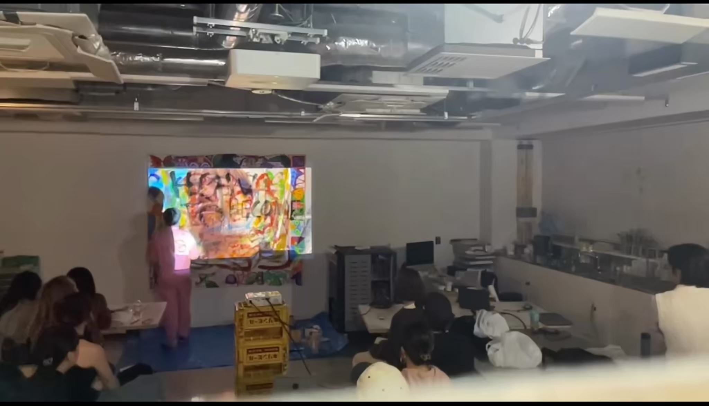
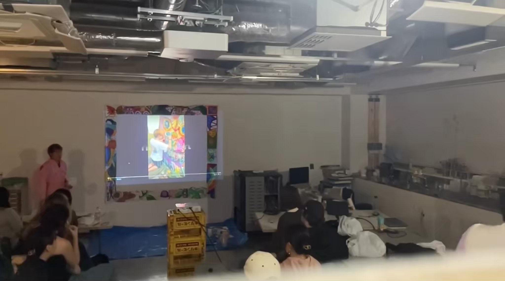

偉大なアーティストになるには？
How to Become a Great Artist?
2023
Video installation, oil painting, Acrylic, oilstick, live-painting, India ink
2.0 m × 2.0 m / 78.7 in × 78.7 in
6min 34sec


「偉大なアーティストになる方法 “ ドキュメンテーション・プロジェクトこのプロジェクトは、ビデオ、ペインティング、観客の記憶（ライブペインティングを通して）という3つの形式のドキュメンテーションを通して、偉大なアーティストになるというコンセプトを探求する。
ビデオ：アーティストの通勤時間を反映するため、電車内で撮影。
ペインティング（キャンバスの枠）：アーティストの主要なメディアである絵画をスクリーンの周りに額装し、アートによるドキュメンテーションを象徴する。
ライブ・ペインティング（脳）：つかの間の瞬間をとらえるパフォーマティブな行為で観客を巻き込む。作品には様々な色や形が含まれ、「偉大なアーティストになる方法」という一文が徐々に明らかになる。
“How to Become a Great Artist” Documentation Project. This project explores the concept of becoming a great artist through three forms of documentation: video, painting, and audience memory (via live painting).
Video: Filmed on a train to reflect the artist’s commute, here thoughts on this concept often arise. The video will be projected onto a screen (paper).
Painting: The primary medium of the artist, with a painting framed around the screen, symbolizing documentation through art.
Live Painting (Brain): Engaging viewers in a performative act that captures the fleeting moment. The artwork includes various colors, shapes, and a gradual revelation of the sentence “How to become a great artist.”